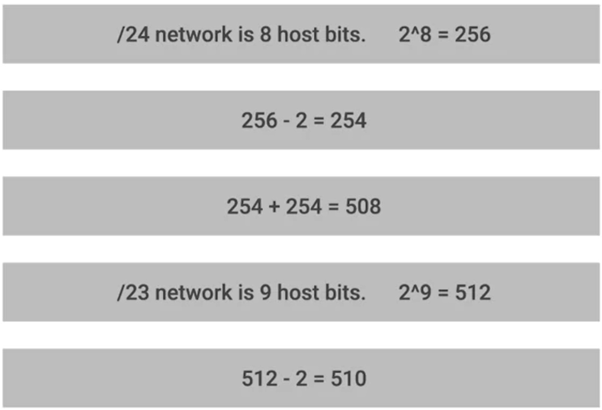

Gateway router - serves as entry and exit path to specific network
Core router - only speaks to other core routers
subnets allow spliting a large network into many small ones
CIDR - classless iner-domain routing
demarcation point - describe where one network or system ends and another one begins.
CIDR notation 123.456.789.000 /24
you allways get 2 addresses less, since 255 is for broadcast and 0 is not in use

for a 255.255.0.0 subnet mask, the subnet ID are the first 2 octets